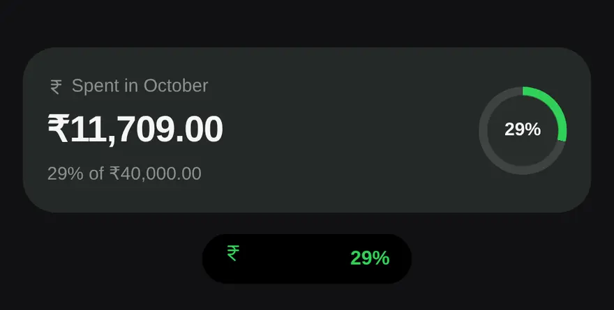
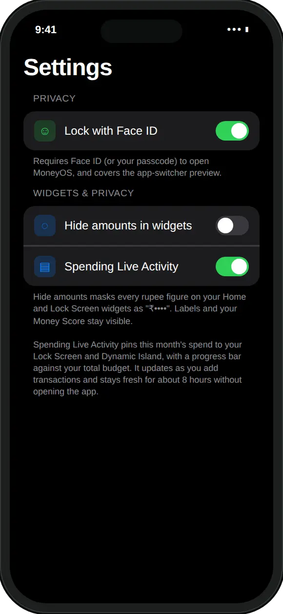

What can MoneyOS show on the Lock Screen?
This month's spend, how much of your monthly limit it uses, and a shortcut to add an expense. There are three widgets and a Live Activity to choose from.
- Spend status. This month's spend as a share of your total monthly limit. As a round gauge it shows the percentage, as a wider widget it reads "₹12,400 spent · 62% of limit" with a bar, and above the clock it fits on one line.
- MoneyOS. What you have spent this month, with your Money Score from 0 to 100. The same widget also comes in two Home Screen sizes, and the medium one adds today's spend and your top categories.
- Quick add. A round button that opens the Add sheet, so you can log a payment the moment you make it. On iOS 18 there is also an Add expense control for Control Center.
The colours do the warning for you. The gauge is green while you are under 80% of your limit, turns amber from 80%, and red once you pass 100%. These are the same 80% and 100% points at which MoneyOS sends limit alerts. SIPs and other investments do not count as spending, so the number matches Home.
How do I add a budget widget to my Lock Screen?
Set a monthly limit in MoneyOS, then add the Spend status widget from the Lock Screen editor. Four steps:
- Set a monthly limit. In MoneyOS, open Manage, then Limits, and set a Total monthly limit. Without one, the widget shows only what you have spent.
- Edit your Lock Screen. Touch and hold the Lock Screen until Customize appears, tap Customize, then choose the Lock Screen.
- Add Spend status. Tap the widget area under the clock, find MoneyOS, and tap Spend status. Pick the round gauge, the wider bar, or both.
- Tap Done. The widget now shows this month's spend as a share of your limit, and it refreshes when you log expenses in MoneyOS.
The widgets follow the ledger you have open in MoneyOS. If you keep Personal, Family and Business apart, switch to the one you want on your Lock Screen.
What is the spending Live Activity?
A live card for this month's spend that sits on your Lock Screen and in the Dynamic Island. Turn it on in Settings, under Widgets and privacy.
It shows "Spent in" the current month, the amount, a progress bar against your total budget, and one line such as "62% of ₹20,000". Go past the limit and that line tells you by how much. A Log button opens the Add sheet. On iPhones with a Dynamic Island, the compact view shows the percentage next to the camera.

The card updates as you add transactions. It stays fresh for about 8 hours without opening the app, and MoneyOS starts a fresh card for each new month. Like everything in MoneyOS it is worked out on your iPhone. Nothing is sent to a server to keep it current.
Can I hide the amounts on my Lock Screen?
Yes. Turn on Hide amounts in widgets in Settings, and every rupee figure on your widgets shows as ₹••••.
Labels, percentages and your Money Score stay visible, so you still see how the month is going without anyone nearby seeing what you spent. The Live Activity follows the same setting.
It sits next to Lock with Face ID, which keeps the app itself closed to anyone but you. Read more about what stays on your phone, or why MoneyOS was built this way.

Frequently asked questions
Can I see my budget on the iPhone Lock Screen?
Yes. Add the MoneyOS Spend status widget to your Lock Screen. It shows this month's spend as a percentage of your total monthly limit, as a round gauge, a bar, or one line of text above the clock.
What do the colours on the widget mean?
Green while you are under 80% of your monthly limit, amber from 80%, and red once you go past 100%. The same colours are used in the Live Activity.
How do I turn on the spending Live Activity?
In MoneyOS, open Settings and turn on Spending Live Activity under Widgets and privacy. It pins this month's spend to your Lock Screen and the Dynamic Island, with a progress bar against your total budget.
Can I hide the amounts on my widgets?
Yes. Turn on Hide amounts in widgets in Settings. Every rupee figure on your Home Screen and Lock Screen widgets shows as ₹••••, while labels and your Money Score stay visible.
Do I need a monthly limit for the widgets to work?
No. Without a total monthly limit the widgets and Live Activity simply show what you have spent this month. The gauge, the percentage and the colours appear once you set a limit.
Is MoneyOS free?
Yes. The whole app is free, with no subscription, no ads and no in-app purchases. There is no account and no bank login.